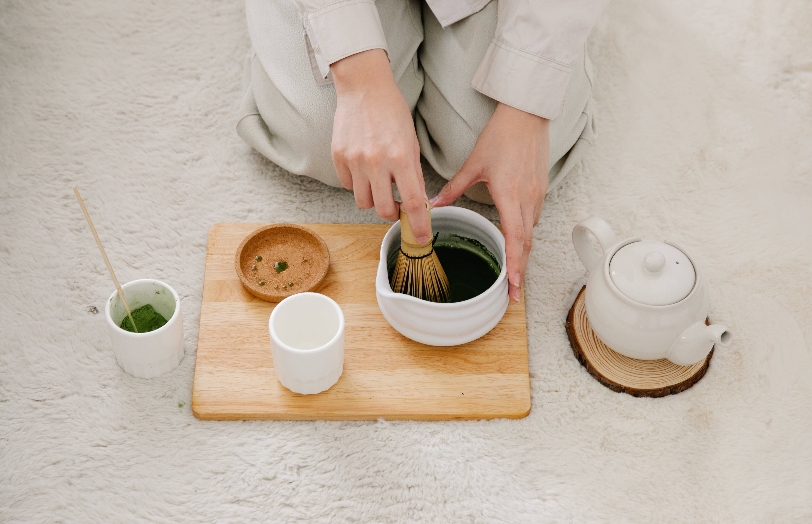
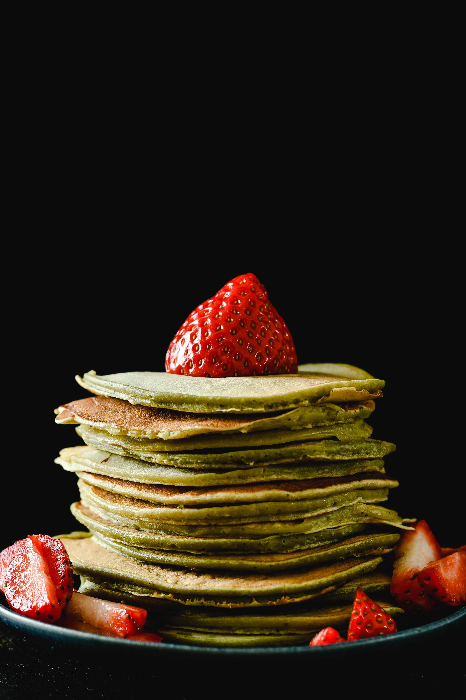
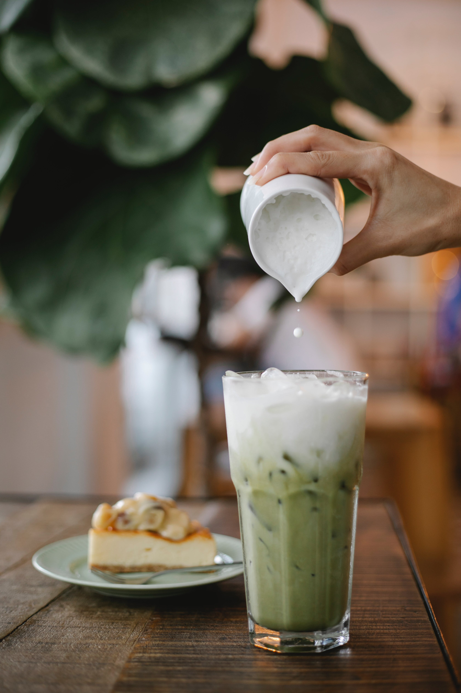
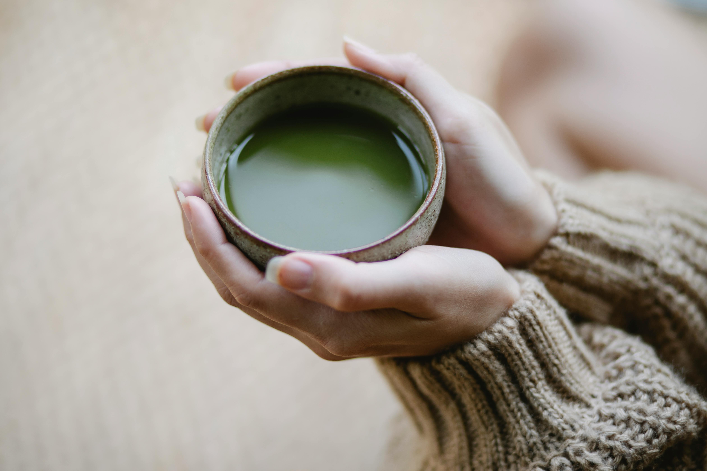

Matcha
Who makes Matcha?

Woman preparing matcha
Higher-grade matcha is mainly produced in Japan.
Here are some specific brands that sell matcha:
- Ippodo Tea
- Encha
- Chamberlain Coffee
- Chalait Matcha
- Matcha Konomi
- Breakaway Matcha
What is Matcha?
Matcha is green tea leaves finely-grounded into powder. Well, the process is a little more complicated than that, but just know it is a powder.
 Culinary-grade Matcha
Culinary-grade Matcha
Types of Matcha
| Type |
Description |
Use |
Taste |
| Ceremonial |
It is the highest grade of matcha harvested from the first harvest. The color is vibrant green and the powder has a more velvety texture. |
Ceremonial grade matcha is most suitable for drinks. |
Has a natural sweetness with notes of 'grassy' from the green tea leaves. |
| Culinary |
Slightly lower grade and less expensive. Depending on the quality, it can be a dull brownish-green color. |
Most suitable to use in cooking. |
Has a bolder, less nuanced flavor. In other words, it is more bitter than sweet. |
When is a good time to buy matcha?

Matcha Strawberry Pancakes
Honestly, matcha can get pretty expensive. Typically a 1oz matcha is sold for $22+ depending on where you buy from.
Based on my experience, a good time to stock up on matcha is around Black Friday/Cyber Monday and Christmas.
Where to buy Matcha?

Matcha Latte from a Café
- Amazon - many brands to choose from
- Chamberlain Coffee - they have different flavors
- Cafés - if you prefer not to make it yourself
There are others, but this is where I usually purchase from.
How to make a Matcha latte
Preparing a matcha latte the traditional way:
- Heat up water (we only need a small amount)
- Put about 1 teaspoon of matcha in the bowl
- Soak the wooden whisk in the water to soften the bristles
- Then pour the water in the bowl containing the matcha
- Using the whisk, mix the matcha and water in an "M" motion until the powder is dissolved, and set aside
- Get a pretty glass and fill it with ice along with your choice of milk (my favorite is almondmilk or oatmilk)
- Pour the matcha on top, and enjoy!
An alternative is using an electric handheld whisk instead of the wooden whisk - it works the same.
Why should I drink Matcha?

Matcha in a Bowl
According to an article written by Zarafshan Shiraz,
Benefits of drinking matcha: A powerful antioxidant-packed green tea
The benefits of drinking matcha*:
- Enhanced brain function
- Enhanced immune function
- Support for heart health
- Support liver health
- Proven to reduce BMI
- Rich in antioxidants
- Reduced risk of stomach cancer
* Effects vary from person to person and matcha does contain caffeine, so it is important to moderate your consumption of matcha.